How to install Creme CRM on Windows
| Author: | Raphaël BECK |
|---|---|
| Version: | 2-9-2011 for Creme version 1.1 |
| Copyright: | Hybird |
| License: | GNU FREE DOCUMENTATION LICENSE version 1.3 |
Optional
To maintain your Creme CRM easily updated you can use hg via TortoiseHG
Download it from bitbucket take care to take the good version for your OS (i.e. : 64bits or 32bits)
Install it
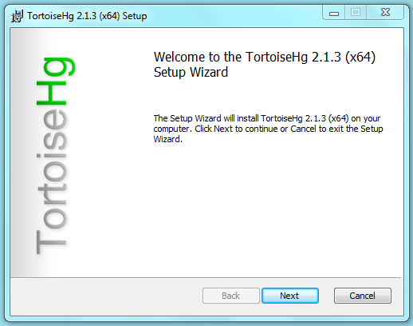 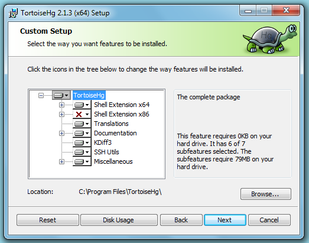
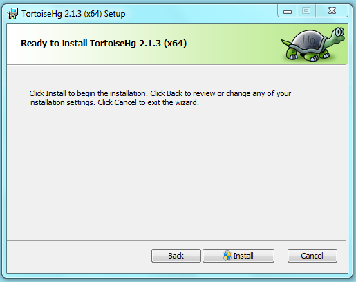
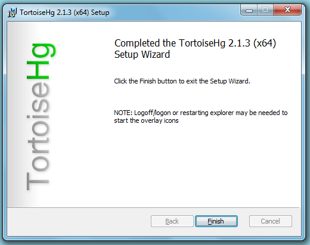
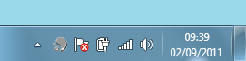
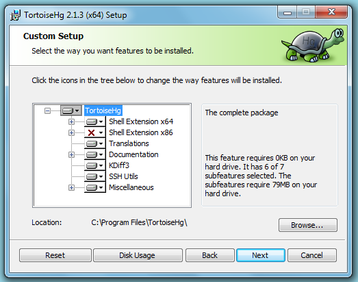
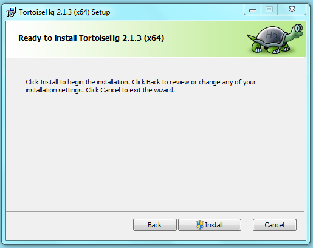
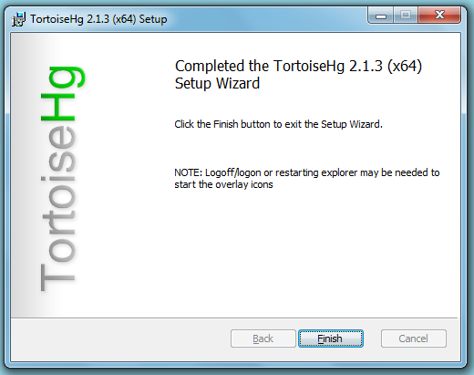
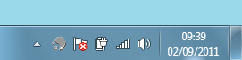
To enjoy a complete Creme experience download and install the latest firefox version
Installation
Download Creme CRM
If you HAVE installed TortoiseHG:
Right click in the folder you want to install Creme
TortoiseHG / Clone
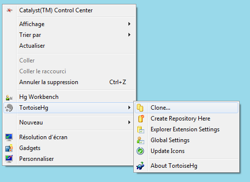In source enter https://bitbucket.org/hybird/creme_crm
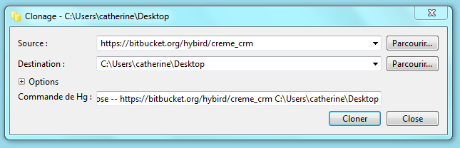Destination should be the current directory you right clicked in
Click clone and wait
Then click close, a directory named creme_crm should be appeared
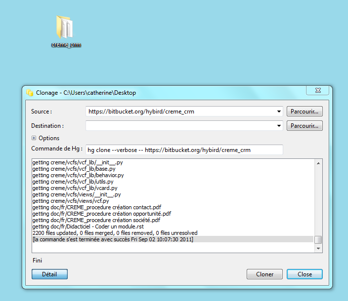
If you HAVEN'T installed TortoiseHG:
Click on get source and select your favorite format (zip or gz or bz2)
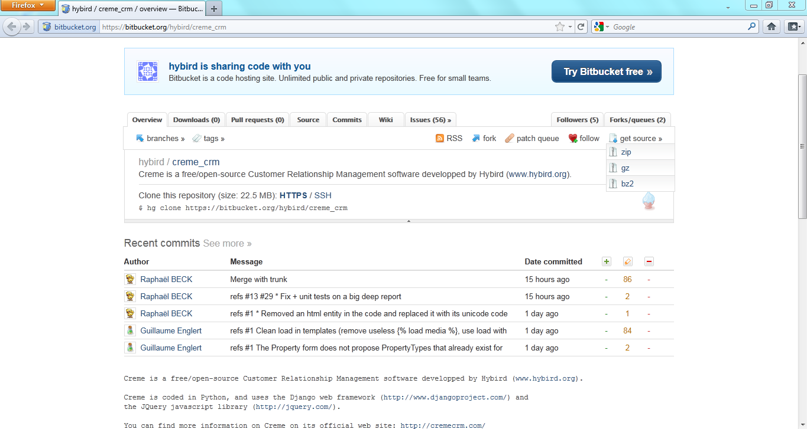Extract sources of Creme from the archive (example for zip archive right clic/extract all)
Download & install
Python 2.6.6
Download & install 64 bits version
 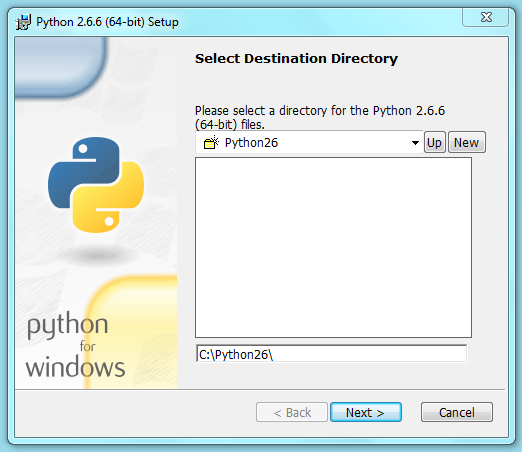
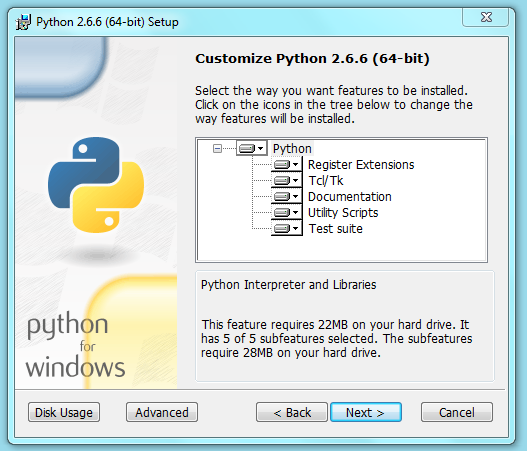
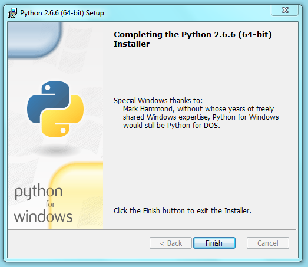
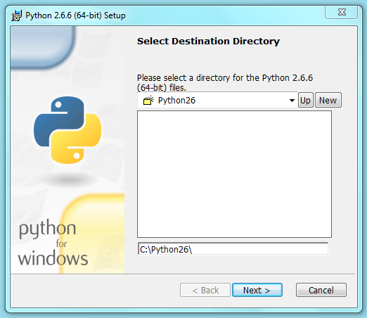
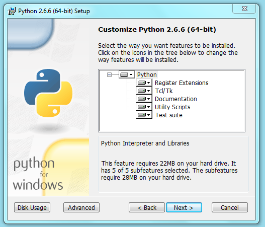
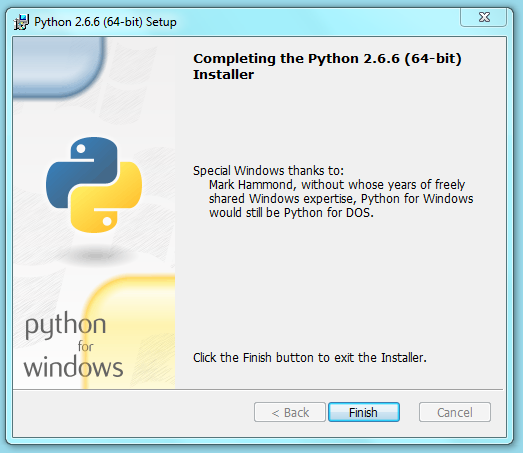
Add python directory to the PATH
- On Windows Seven:
Right clic on Computer
Advanced system settings
Environment Variables
Search PATH in System variables, then clic on it and Edit
Add the following (assuming python is installed in C:\Python26)
";C:\Python26"
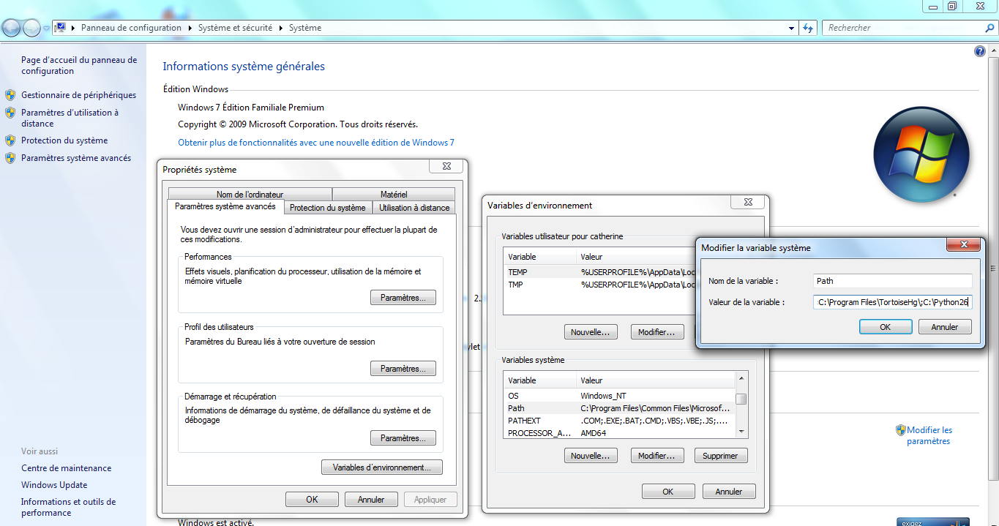
Wamp
- Download & install 64 bits http://www.wampserver.com/dl64.php
- OR 32 bits http://www.wampserver.com/dl32.php
MySQL python connector
Download & install 64 bits version MySQL-python-1.2.2.win-amd64-py2.6.exe
 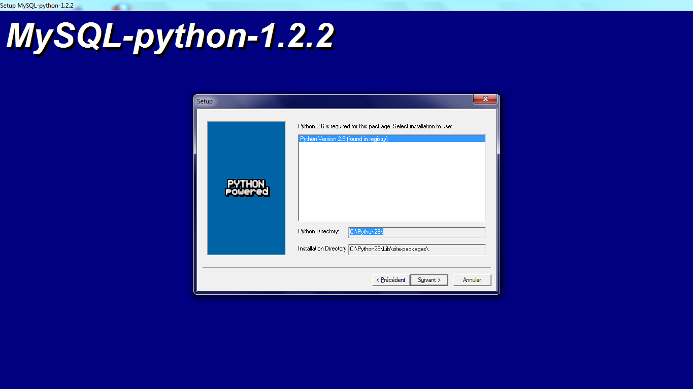
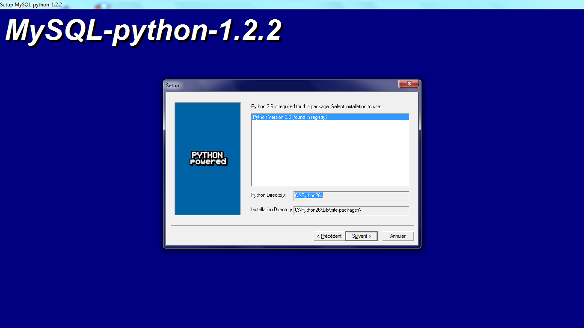
OR 32 bits version MySQL-python-1.2.2.win32-py2.6.exe
2 DLLs could be required, place them into %WINDIR%\system32 (Generaly C:\Windows\System32)
Note
From here, if any installer reports that python2.6 is not found (generally happens on 64bits OS) read [1].
Java
Download from java.com
The same way you have done for python in PATH
Create JAVA_HOME with the value "C:\Program Files (x86)\Java\jre6" (or the directory where you have installed java, take care of the ")
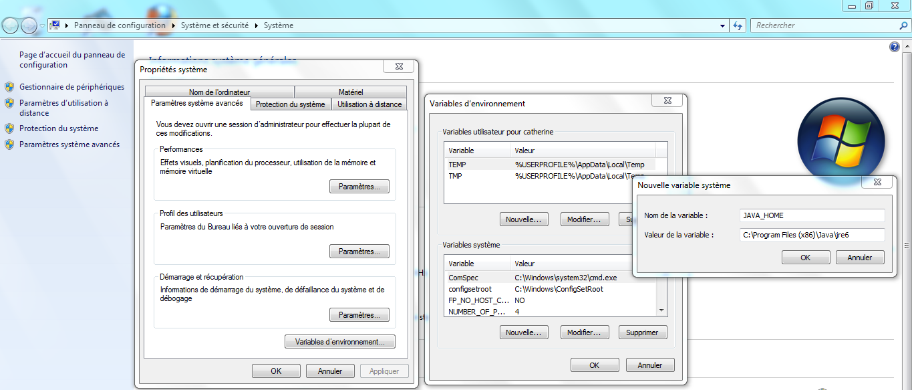Add ;"C:\Program Files (x86)\Java\jre6\bin" in PATH (or the directory where you have installed java, take care of the ")
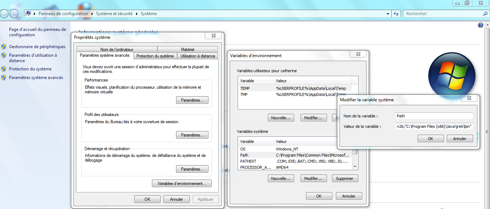
Easy-install
It's a python package installer which is really easy to use. You can also install download & install each package by your own without it.
- 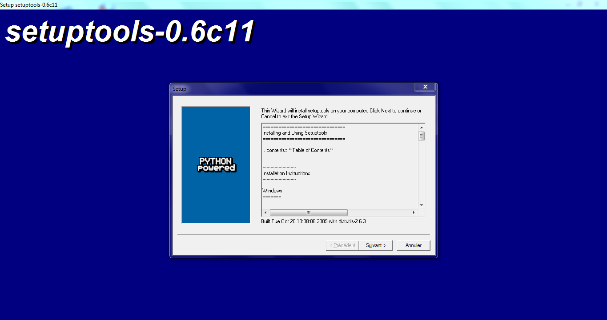 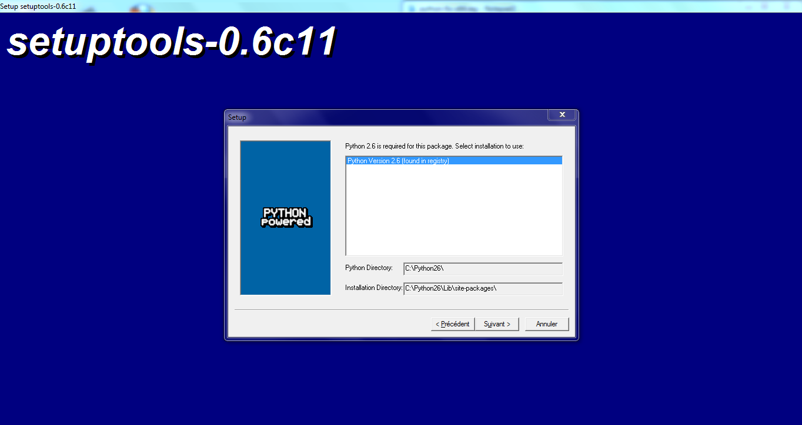
How to install a package with easy install
Type "cmd" in run (or Windows+R)
cd C:\Python26\Scripts
easy_install.exe your_package_name
For example easy_install.exe django
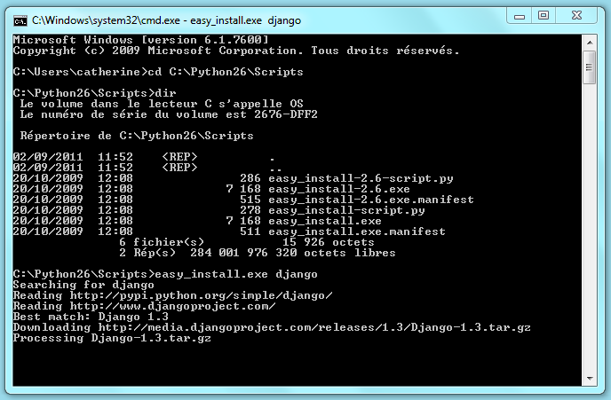
Install following packages
Note
For some of those packages, you MAY need to have a compiler. Actually only PIL and pycrypto need to be compiled, so either you can download their installer separately or download one of the following compilers and compile them.
Visual Studio 2008 Express take care to get the 2008 version (not 2010 or above)
Download & install the latest
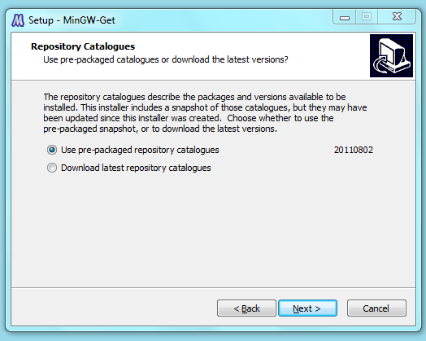 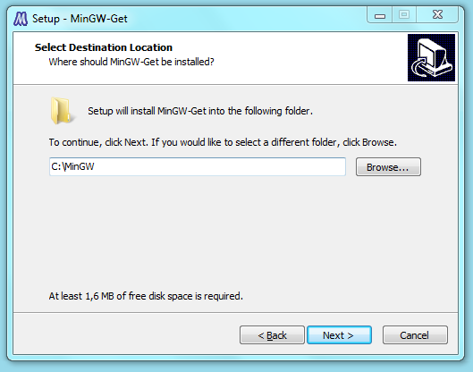 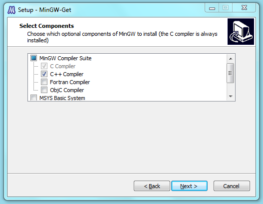
Required packages
- Django 1.3 (type django)
- Django-mediagenerator 1.10.4 (type django_mediagenerator)
- South 0.7 (type south)
- pytz-2011e (type pytz)
Optionnal packages
creme.graphs:
- pygraphviz (type pygraphviz)
Note
Don't forget to install Graphviz first
- creme.activesync:
PIL >= 1.1.7 (type PIL or download separately from effbot)
restkit 2.2.1 (type restkit==2.2.1)
pycrypto 2.3 (type pycrypto or download separately from here or go to the complete page)
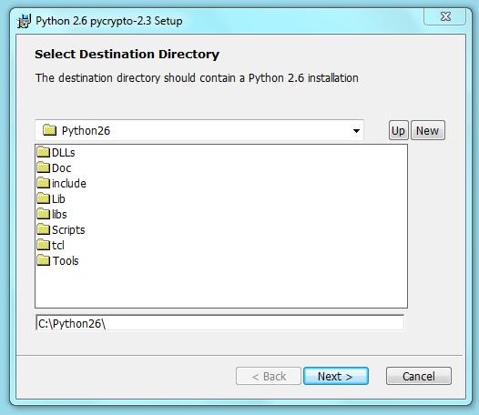
Configuration
Create the database in mysql
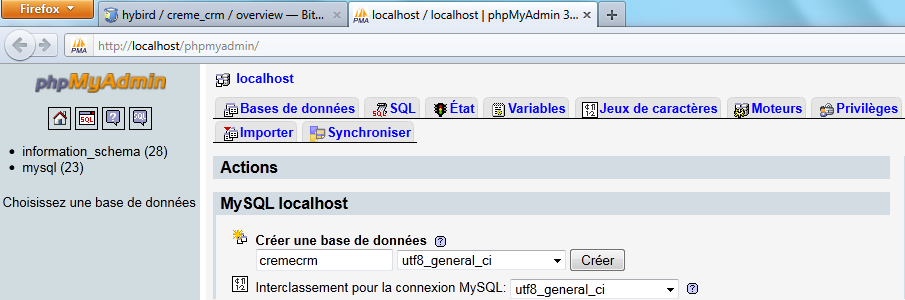Enter your settings in creme_crm/creme/settings.py
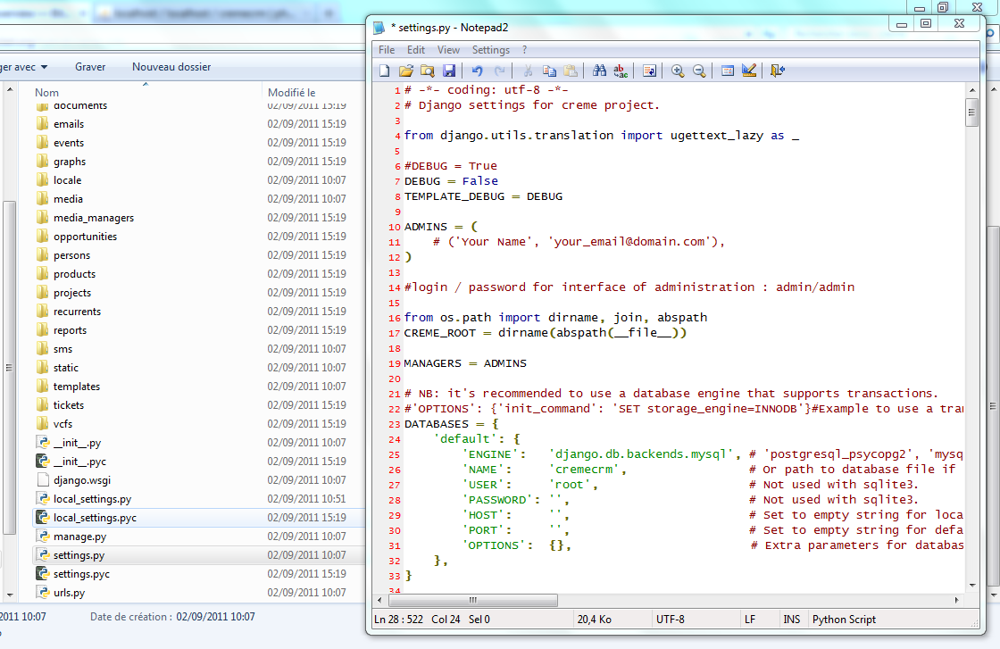Open a cmd
cd C:\Users\%USERNAME%\Desktop\creme_crm (assuming you have extracted Creme on the desktop)
python manage.py syncdb
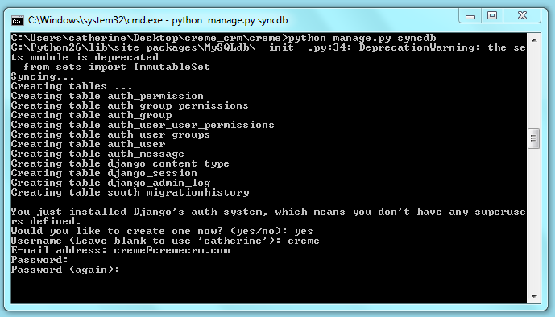python manage.py migrate
python manage.py creme_populate -v
python manage.py generatemedia
python manage.py runserver
Open your browser, go to http://127.0.0.1:8000/ and enjoy your new instance of Creme
Notes
| [1] | Python not found: |
Take a notepad and copy the following into (each line MUST NOT begin with a space, a tab, etc):
Windows Registry Editor Version 5.00 [HKEY_LOCAL_MACHINE\SOFTWARE\Wow6432Node\Python] [HKEY_LOCAL_MACHINE\SOFTWARE\Wow6432Node\Python\PythonCore] [HKEY_LOCAL_MACHINE\SOFTWARE\Wow6432Node\Python\PythonCore\2.6] [HKEY_LOCAL_MACHINE\SOFTWARE\Wow6432Node\Python\PythonCore\2.6\Help] [HKEY_LOCAL_MACHINE\SOFTWARE\Wow6432Node\Python\PythonCore\2.6\Help\Main Python Documentation] @="C:\\Python26\\Doc\\python264.chm" [HKEY_LOCAL_MACHINE\SOFTWARE\Wow6432Node\Python\PythonCore\2.6\InstallPath] @="C:\\Python26\\" [HKEY_LOCAL_MACHINE\SOFTWARE\Wow6432Node\Python\PythonCore\2.6\InstallPath\InstallGroup] @="Python 2.6" [HKEY_LOCAL_MACHINE\SOFTWARE\Wow6432Node\Python\PythonCore\2.6\Modules] [HKEY_LOCAL_MACHINE\SOFTWARE\Wow6432Node\Python\PythonCore\2.6\PythonPath] @="C:\\Python26\\Lib;C:\\Python26\\DLLs;C:\\Python26\\Lib\\lib-tk"
Save the file as something like python-fix-x64.reg (the .reg is really important!)
Execute it and re-run setuptools